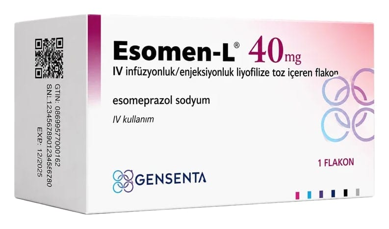

Esomen-L 40 mg IV İnfuzyonluk/Enjeksiyonluk İçin Liyofilize Toz İçeren Flakon, 1 Adet

Ne için kullanılır
KT · Bölüm 1ESOMEN-L “proton pompası inhibitörü (baskılayıcısı)” olarak bilinen ilaçlardan biridir. Midenizdeki asit oluşumunu azaltır.
ESOMEN-L 40 mg IV infüzyonluk/enjeksiyonluk liyofilize toz içeren flakon’un iki dozu mevcuttur: 20 mg ve 40 mg.
Her doz 40 mg esomeprazol toz içerecek şekilde flakonlarda yer alır.
ESOMEN-L aşağıdaki durumların tedavisinde kullanılır: • Mide suyunun yemek borusuna kaçışına bağlı yemek borusunda iltihaplanma ve ağrı (Eroziv reflü özofajitin tedavisinde) • Yetişkinler, ergenler ve çocuklarda, mide suyunun yemek borusuna kaçışına bağlı mide yanması ve kusma gibi hastalık belirtilerinde (Gastro-özofajiyal reflü hastalığının semptomatik tedavisinde)
• Ülserler: Yetişkinlerde ağrı ve iltihaplanma için kullanılan ilaçların neden olduğu ülserlerin iyileştirilmesi ve önlenmesinde (gastrik ülserlerin iyileştirilmesi ile NSAİİ (non-steroidal anti- inflamatuvar ilaç) tedavisine bağlı gastrik ve duodenal ülserlerin önlenmesi) • Akut kanamalı gastrik veya duodenal ülserli yetişkin hastalarda terapötik endoskopi sonrası, kanamanın kısa süreli durdurulmasında ve tekrar kanamanın önlenmesinde.